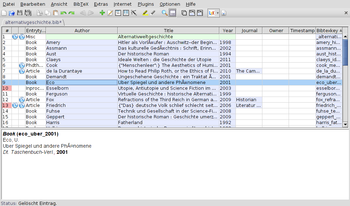

JabRef
Dieser Artikel wurde für die folgenden Ubuntu-Versionen getestet:
Ubuntu 14.04 Trusty Tahr
Zum Verständnis dieses Artikels sind folgende Seiten hilfreich:
JabRef  ist eine Literaturverwaltung, die Daten im BibTeX-Format speichert. Die Anwendung ist ein Java-Programm und daher sowohl unter Linux als auch unter Mac und Windows einsetzbar. Meist verwendet man BibTeX in Verbindung mit LaTeX.
ist eine Literaturverwaltung, die Daten im BibTeX-Format speichert. Die Anwendung ist ein Java-Programm und daher sowohl unter Linux als auch unter Mac und Windows einsetzbar. Meist verwendet man BibTeX in Verbindung mit LaTeX.
Insbesondere bietet sie die Möglichkeit, direkt von einem USB-Stick gestartet zu werden, ohne dass eine Installation notwendig ist. Daher ermöglicht es JabRef, Literaturverzeichnisse ständig bei sich zu haben. Mit jedem Eintrag können auch mehrere Dateien verknüpft werden, so dass beispielsweise als PDF gespeicherte Dokumente ebenfalls an jedem Ort direkt aus der Literaturverwaltung geöffnet werden können. Für Nutzer aus Medizin und Naturwissenschaften erlaubt JabRef den direkten Import von Einträgen aus PubMed.
JabRef selbst ist freie Software und steht unter der GPL2 und befindet sich im universe in Ubuntu (und main in Debian).
Voraussetzungen¶
JabRef erfordert eine Java-Laufzeitumgebung (JRE), welche mindestens der Version 1.6 (Java 6) oder neuer entsprechen muss.
Installation¶

Aus den Paketquellen¶
JabRef kann direkt aus den Paketquellen installiert [1] werden:
jabref (multiverse bis Ubuntu 10.04, universe ab 10.10)
 mit apturl
mit apturl
Paketliste zum Kopieren:
sudo apt-get install jabref
sudo aptitude install jabref
Von Hand¶
JabRef kann jedoch ebenso von Hand installiert werden. Dazu lädt man sich von der Sourceforge-Seite die neuste Version als .jar herunter und verschiebt sie auf seiner Festplatte an einen Platz seiner Wahl ( /opt/ bietet sich jedoch an).
Hinweis!
Fremdsoftware kann das System gefährden.
Dann kann JabRef mit dem Befehl:
java -jar JabRef-2.9.jar
gestartet werden.
Der Vorteil einer händischen Installation liegt darin, dass JabRef dann Ayatana unterstützt.
Konfiguration¶
Zuerst einmal möchte man ein paar grundlegende Einstellungen vornehmen, welche man unter "Options → Preferences" findet. Hier sollte man als erstes unter "General → Language" die Sprache auf deutsch umstellen und JabRef neustarten. Danach sollte JabRef nun in deutscher Sprache erscheinen und man gelangt über "Optionen → Einstellungen" wieder in das Menü zurück. Damit Umlaute und Akzente (z. B. in Autorennamen oder Titeln) richtig dargestellt werden kann es sinnvoll sein unter "Optionen → Einstellungen → Allgemein" die Standard-Zeichenkodierung auf UTF8 zu ändern.
Wer möchte, kann JabRef auch zwingen, sich dem gewählten GTK-Stil anzupassen. Hierzu wird "Optionen → Einstellungen → Erweitert" der Klassenname "com.sun.java.swing.plaf.gtk.GTKLookAndFeel" eingetragen.
Für den Anfang will man unter "Spaltenanordnung" vielleicht noch einstellen, was in der Hauptansicht dargestellt wird; dann kann man auch schon loslegen.
Benutzung¶
Die Benutzung an sich ist recht einfach. Man kann bestehende BibTeX-Dateien öffnen oder neue erzeugen. Dann kann man Datensätze als BibTeX und aus zahlreichen anderen Formaten importieren. Genauso kann man von Hand neue Einträge anlegen. Man kann Einträge sogar direkt nach Lyx, Kile, Vim, Emacs, WinEdt und LatexEditor live in das geöffnete Dokument hinein exportieren.
Außerdem bietet JabRef die Möglichkeit mit externen Import- und Export-Filtern weitere Formate zu unterstützen. Es können direkt aus JabRef heraus eine Anzahl an Online-Bibliotheken abgefragt werden und es lässt sich durch Plugins erweitern.
JabRef mit OpenOffice¶
Seit JabRef 2.9 ist die OpenOffice-Unterstützung integriert. Für ältere Versionen muss man dafür ein Plugin für JabRef herunterladen. Unter Plugins → Plugins verwalten wählt man Plugin installieren und wählt die Datei (z. B. net.sf.jabref.oo.ooplugin-0.9.jar) aus und startet JabRef neu. Um eine Verbindung mit OpenOffice herzustellen zu können muss das Paket openoffice.org-java-common installiert sein. Außerdem muss noch ein Style-File ausgewählt werden. Ein Beispiel für solch ein Style-File findet man hier.

- Erstellt mit Inyoka
-
 2004 – 2017 ubuntuusers.de • Einige Rechte vorbehalten
2004 – 2017 ubuntuusers.de • Einige Rechte vorbehalten
Lizenz • Kontakt • Datenschutz • Impressum • Serverstatus -
Serverhousing gespendet von